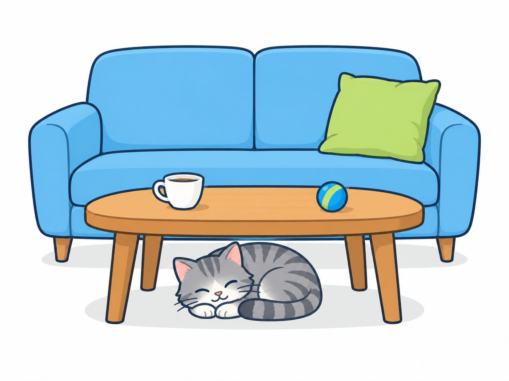

be동사의 긍정문
정답 및 해설 p.12빈칸에 알맞은 be동사의 현재형(am, are, is)을 쓰세요. POINT 1 · 본책 p.10
밑줄 친 부분을 줄임말로 바꿔 쓰세요. POINT 1 · 본책 p.10
단어new 새로운garden 정원umbrella 우산kitchen 부엌piano 피아노dancer 춤추는 사람right 옳은trip 여행
주어를 대명사(he, she, it, we, they)로 바꾸고, 알맞은 be동사의 현재형을 쓰세요. (둘 다 맞아야 1개) POINT 2 · 본책 p.11
밑줄 친 부분은 모두 틀렸어요. 바르게 고쳐 쓰세요. POINT 2 · 본책 p.11
단어grandparents 조부모님spaghetti 스파게티plate 접시store 가게eye 눈brown 갈색의shoes 신발twins 쌍둥이
밑줄 친 be동사에 유의하여 우리말 해석을 완성하세요. POINT 3 · 본책 p.12
밑줄 친 be동사의 뜻을 골라 기호를 쓰세요. POINT 3 · 본책 p.12
ⓐ (무엇)이다 ⓑ (어떠)하다 ⓒ (~에) 있다
단어police officer 경찰관baby 아기small 작은key 열쇠bed 침대soup 수프music 음악next to ~ 옆에dirty 더러운famous 유명한
빈칸에 알맞은 be동사를 쓰세요. 과거를 나타내는 말이 없으면 현재형으로 써요. POINT 2·4 · 본책 p.11, 13
우리말과 같은 뜻이 되도록 괄호 안의 말을 이용하여 문장을 쓰세요. (첫 글자는 대문자, 끝은 마침표) POINT 1-4
45개 이하 많이 틀린 세트의 POINT를 본책에서 다시 읽고, 틀린 문제만 다시 풀어요.
단어museum 박물관white 흰색의rainy 비가 오는summer 여름nervous 긴장한boring 지루한vet 수의사fan 팬
be동사의 부정문과 의문문
정답 및 해설 p.14다음 문장을 부정문으로 바꿔 쓰세요. (줄임말을 쓸 것) POINT 5 · 본책 p.16
밑줄 친 부분을 두 가지 줄임말로 쓰세요. 한 가지만 가능하면 하나만 쓰세요. POINT 5 · 본책 p.16
밑줄 친 부분은 모두 틀렸어요. 바르게 고쳐 쓰세요. POINT 5 · 본책 p.16
단어angry 화난question 문제, 질문difficult 어려운brother 형제fault 잘못clean 깨끗한alone 혼자인late 늦은sad 슬픈
다음 문장을 의문문으로 바꿔 쓰세요. (첫 글자는 대문자, 끝은 물음표) POINT 6 · 본책 p.17
대명사 주어 + be동사로 짧게 대답하세요. POINT 6 · 본책 p.17~18
의문문으로 바꾸고, 괄호 안의 말로 대답을 쓰세요. (둘 다 맞아야 1개) POINT 6 · 본책 p.17~18
단어Vietnam 베트남shop 가게closed 문을 닫은member 회원club 동아리twelve 12(살)pencil case 필통teachers' room 교무실long 긴
우리말과 같은 뜻이 되도록 주어진 단어를 바르게 배열하세요. (첫 글자는 대문자로) POINT 5-6
대화의 빈칸에 알맞은 be동사를 쓰세요. (둘 다 맞아야 1개) POINT 6
30개 이하 많이 틀린 세트의 POINT를 본책(p.16~18)에서 다시 읽고, 틀린 문제만 다시 풀어요.
단어salty 짠heavy 무거운box 상자concert 콘서트fun 재미있는gym 체육관hard 어려운
학교 시험의 서술형처럼 문장 전체를 써요. 주어와 be동사의 짝, 대문자, 마침표·물음표를 꼭 확인해요.
표를 보고 괄호 안의 지시에 맞게 문장을 쓰세요. POINT 2·4·5
| now | yesterday | |
|---|---|---|
| Mina | at school | at the beach |
| Jun and Leo | in the library | at the zoo |
〈조건〉에 맞게 우리말을 영어로 쓰세요. POINT 4·5·6
다음 글에서 틀린 부분 두 군데를 찾아 바르게 고쳐 쓰세요. POINT 1·2
be동사를 써서 나를 소개하는 문장 3개를 쓰세요. (예: 이름, 나이, 좋아하는 것, 가족) POINT 1-3
스스로 확인: □ 주어와 be동사 짝이 맞나요? □ 첫 글자는 대문자인가요? □ 끝에 마침표를 찍었나요? (모범 답안은 정답 및 해설에)
단어beach 해변library 도서관zoo 동물원sick 아픈name 이름student 학생
[1-2]다음 빈칸에 들어갈 말로 알맞은 것을 고르세요. [각 5점]
다음 중 빈칸에 is를 쓸 수 없는 것은? [5점]
다음 중 어법상 알맞은 문장은? [5점]
다음 대화의 빈칸에 들어갈 말로 알맞은 것은? [5점]
B: She is a nurse.
다음 중 대화가 자연스러운 것은? [5점]
다음 중 어법상 틀린 문장의 개수는? [5점]
ⓑ The milk are in the fridge.
ⓒ I wasn't busy yesterday.
ⓓ Was your parents at the party?
ⓔ Are you and Jane ready?
다음 문장을 괄호 안의 지시대로 바꿔 쓰세요. [10점]
(1) 부정문
(2) 의문문
다음 문장에서 어법상 틀린 부분을 찾아 바르게 고쳐 쓰세요. [8점]
우리말과 일치하도록 주어진 단어를 바르게 배열하세요. (첫 글자는 대문자로) [8점]
(very / her puppies / small / are)
다음 대화의 빈칸에 알맞은 말을 쓰세요. [8점]
B: Yes, I . It was very quiet there.
다음 그림을 보고 질문에 알맞은 답을 쓰세요. [10점]

(1) A: Is the cat on the sofa?
B:
(2) A: Is the cat under the table?
B: Yes, .
다음 〈조건〉에 맞게 우리말을 영작하세요. [10점]
- be동사의 과거형을 사용할 것
- 줄임말을 사용할 것
- question, difficult를 사용할 것
다음 글에서 어법상 틀린 부분 두 군데를 찾아 바르게 고쳐 쓰세요. [11점]